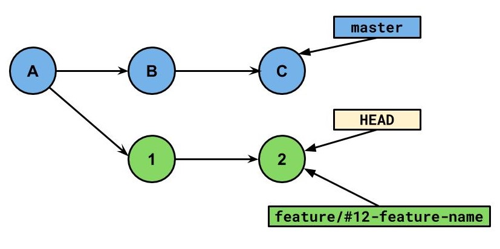

git
Plan
- La ligne de commande
- Les clients Git
- Il y a quoi sous le capot ? (.git/)
- Pimp My Git!
- Quelques scénarios
- Les outils autour de git
- REX et bonnes pratiques
- Dissection d'un commit (si on a le temps)
Notre base

It's time to ...

Git en ligne de commande
Notre base

Rebase
git rebase master
Rebase

Rebase

Rebase Intéractif
git rebase -i masterpick 1 Start my branch1
pick 2 Continue my branch1
Rebase Intéractif

Journal de références (Reflog)
git reflog0f8dde4 HEAD@{0}: rebase -i (finish): returning to refs/heads/master
0f8dde4 HEAD@{1}: rebase -i (squash): first + third
606813c HEAD@{2}: rebase -i (start): checkout f07ec95
b8fed7c HEAD@{3}: commit: third
e3025b3 HEAD@{4}: commit: second
606813c HEAD@{5}: commit: first
f07ec95 HEAD@{6}: commit (initial): initialQuelques scénarios
Notre base
Et on bouge la tête ...
git checkout masterTag
git tag "Add-great-lib" 1git à la cerise
git cherry-pick Add-great-libTel Louis XVI...
git checkout --detach CUne autre cerise
git cherry-pick Add-great-libBack to master
git checkout masterEnfaite non, pas si bien cette lib...
git reset --hard HEAD~1Au et puis si, je vais la remettre
git refloggit reset xxxLes GUI pour Git
SourceTree
Kraken
Tig
ncurses-based (GUI dans un terminal) text-mode interface
Tig
IntelliJ, VSCode...
Avantages
Git pour les null- Facile à prendre en main
- Pas de commandes à apprendre
- Représentation visuel de l'arbre de branches Git
- C'est quand même pas moche...
Inconvénients
- On ne sait pas ce qu'il y a sous le capot
- Besoin d'un compte fabriquant
- Erreurs pas toujours compréhensibles
- Conflits possibles entre les différents processus
Il y a quoi sous le capot ?
Plongeons dans
.git/ (démo)
Pour approfondir le sujet
Pimp My Git!
Aliases
[alias]
co = checkout
st = status --short --branch
mr = !sh -c 'git fetch $1 merge-requests/$2/head:mr-$1-$2 && git checkout mr-$1-$2' -
out = log @{u}..
in = log ..@{u}Hook
- pre-commit
- prepare-commit-msg
- post-checkout
Mon premier plugin !
#!/bin/zsh
c=$(git branch | grep -c "$1")
if [[ "$c" -eq 1 ]]; then
git checkout $(git branch | grep "$1")
else
echo "'$1' is ambigus"
git branch | grep "$1"
exit 1
fiPlugins
D'autres scénarios !
Git fight!
La gestion de conflits (démo)
In case of fire
git commit -am "" & git pushRenaming a file,
How dangerous could it be...
End of lines (EOL)
ou l'enfer des projets legacyLes outils autour de git
Repository management services
Github, Gitlab, Bitbucket, Gogs, Coding...
Gitlab n'est pas NOT git...
What else ?
- Stockage des source centralisé
- Gestion des utilisateurs
- Pull request
- Fork
Intégration continue
Jenkins, VSTS, Gitlab-CI...
REX et bonnes pratiques
Attention, cette partie contient des avis personnels...
Bonnes pratiques sur la construction du message de commit et de la façon de commiter
- Quelle est la taille idéale d'un commit (combien de fichiers, combien de ligne)
- Faire des beaux commits atomiques ! (git add --patch)
- Comment rédiger le messages (This commit will...msg), avec combien de charactère par ligne et pourquoi cette rigueur.
- Pourquoi sauter une ligne entre le titre et le texte...
- Ne pas commencer le message pas un '#' ! (ni le nom d'une ref d'ailleurs)
Inclure git dans le processus de développement
- Tech-Lead review
- Résolution de conflits par le tech-lead
- Commit message comme changelog
La gestion de conflits
- Le meilleur moyen de résoudre les conflits, c'est de ne pas en avoir :
- Retarder les refactoring structurels sur des modules où d'autres travaillent
- Avoir une approche feature first pour les merges, c-a-d celui qui fait le refactoring structurel, doit de faire la résolution des conflits.
- L'importance des conventions de codage pour éviter les conflits par exemple \t VS ' ' (espace)
- Sinon, il faut y aller pas à pas et si possible avoir les différents développeur sous la main...
Les conflits cachés
Lorsque l'on fait un merge entre une feature et un refactoring, il faut bien faire attention à ne rien avoir cassé.
Si le refactoring a supprimé un fichier qui était référencé mais PAS modifié par la feature, git sera incapable de voir qu'il y a un problème.
Dans ce cas ce sera le compilateur et eventuellement l'éxecution des tests qui permettront de détecter le problème.
Gitflow
- Pas forcément adapté, selon la taille de l'équipe
- Créer des noms de branches explicites Avoir un outil qui ne fait pas l'auto-completion des noms de branches n'est pas une excuse
Pour approfondir le sujet
Dissection d'un commit
Git, c'est magique!

Avez vous déjà vu ...
Un commit de Michel
commit 8684d0560cb7c51234cbefebd83409e90cb7e29f
Author: Michel michel.xxxx@viseo.com
Date: Wed Dec 6 12:40:14 2017 +0100
"Init presentation"
git hash
algorithme sha-1

"Hasher" un commit
sha1(
commit_message,
commiter,
commit_date,
author,
authoring_date,
Hash-Of-Entire-Working-Directory
)
Hash-Of-Entire-Working-Directory ?

Exemple : myProjet
Ce que nous voyons
.
│ main.java
│
├───.git
└───resources
│ logo.png
└───components
...
Exemple : myProjet
Ce que git voit

Hashons notre commit
sha1(
"Init presentation"
michel.xxxx@viseo.com
Wed Dec 6 12:40:14 2017 +0100
michel.xxxx@viseo.com
Wed Dec 6 12:40:14 2017 +0100
aa1b2fb696a831c89c53f787e03d863691d2b671
)
Mais ça sert à quoi ?
Conserver l'intégrité des données
Hash du commit parent
sha1(
meta data
commit_message
commiter
commit_date
author
authoring_date
Hash-Of-Entire-Working-Directory
hash-of-parent-commit
)
On est tous le(a) fils(fille) de quelqu'un...

Pour approfondir le sujet
- git objects : https://git-scm.com/book/en/v2/Git-Internals-Git-Objects
Quelques commandes pratiques
Cherry pick plusieurs commits
git cherry-pick cool-feature~3..cool-featureCherry rerere
"reuse recorded resolution"
git config --global rerere.enabled trueLicence
Pour ce qui concerne tous les contenus que nous avons produits dans cette présentation : licence Creative Commons Attribution - Pas d’Utilisation Commerciale 4.0 International
.
licence Creative Commons Attribution - Pas d’Utilisation Commerciale 4.0 International
.
Fondé(e) sur une œuvre à https://github.com/barmic/viseo-take-an-hour_cassandra.git.